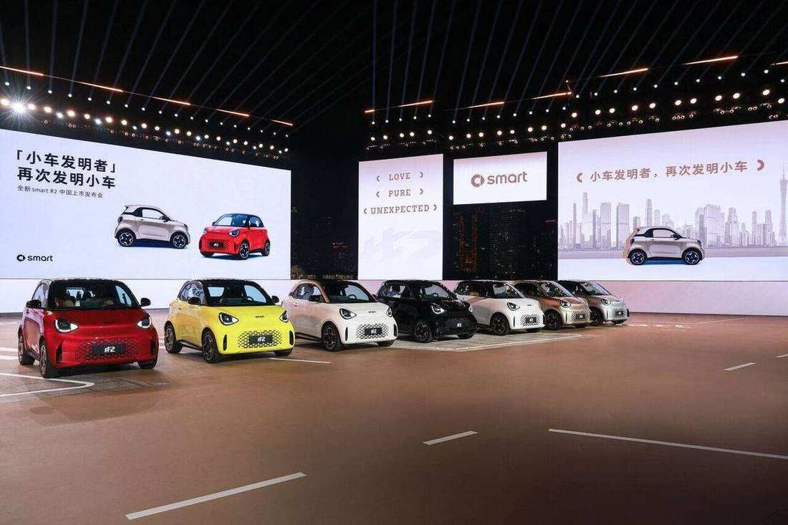
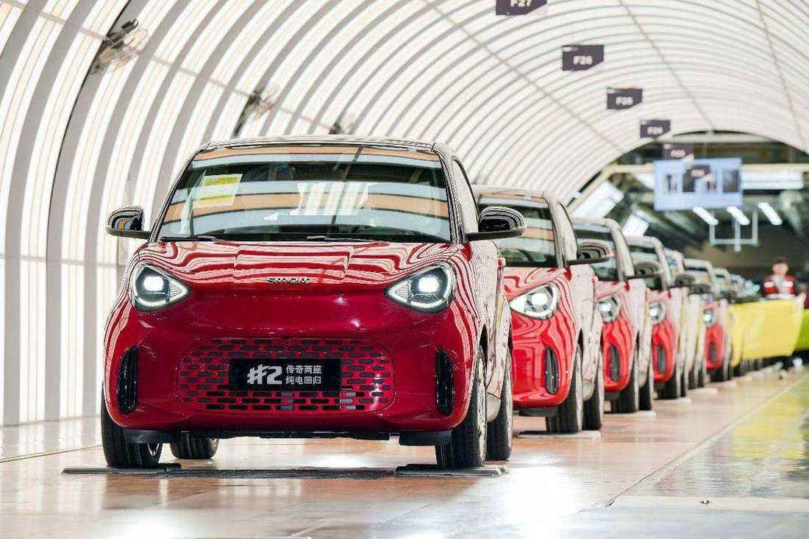

smart · 新車 · 中國2026-11-06
smart #2 中國上市：梅賽德斯設計的兩座純電回歸
The all-electric smart #2 officially launches in China
smart 在廣州發表全電動 #2 Premium，延續 fortwo 兩座比例，由 Mercedes-Benz 全球設計團隊操刀，採專為兩座打造的 ECA 架構。中國將先交付，歐洲預計 2027 年；鎏金高定版已在中國與已開放的歐洲市場售罄。
設計解析 Design Notes
- 比例四輪四角、極短前後懸與約 0.618 肩高比，刻意保留 fortwo 可一眼辨認的都市小車剪影。
- 架構ECA 電動緊湊架構專為兩座量產而生，而非從更大車型縮水，後驅＋五連桿後懸為同級少見。
- 造型語彙懸浮車頂、無框車門與靈感燈組，把經典輪廓包進當代 premium EV 質感。
- 安全籠Tridion Cell Evo 延續堅果式安全籠邏輯，在極小尺碼裡維持乘員艙剛性。
- 品牌方向巴黎首秀後中國先量產交付，兩座位重新成為 smart 產品矩陣的核心識別。